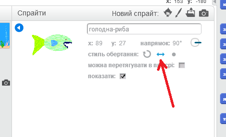
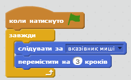
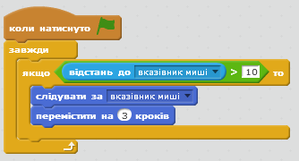
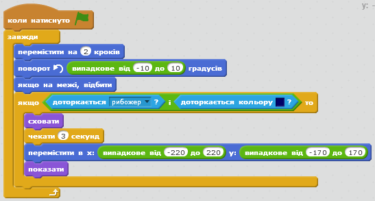

Полювання на відьом
Передмова:
Цей проект схожий на гру "Фелікс і Герберт". Очки нараховуються за те, що гравець влучає у відьом, які з'являються на екрані. Ціль гри - отримати якнайбільше очок за 30 секунд.

Крок 1: Створення літаючої відьми
- Створіть новий проект у Скретч.
- Видаліть об'єкт кота і змініть тло(фон) на природу/ліс.
- Додайте новий об'єкт Відьму у проект за допомогою відповідної кнопки додавання нових спрайтів (Фантазії/Witch ). 
- Тепер треба подбати про те, щоб відьма могла рухатись.
Додайте лише для цього об'єкта змінну під назвою "швидкість" (вкладка Величини). На сцені інформація про цю змінну повинна мати вигляд "Об'єкт2 швидкість".
Зніміть позначку поряд з блоком швидкості, щоб він не відображався на сцені. Ми використаємо змінну, щоб мати змогу змінювати швидкість руху відьми впродовж гри.
Ми використаємо змінну, щоб мати змогу змінювати швидкість руху відьми впродовж гри. - Відьма повинна почати рухатись із початком гри, тож створимо для неї такий скрипт: 
Протестуй свій проект
Натисніть на значок із зеленим прапорцем і перевірте, що робить відьма. Чому вона застрягає/зупиняється біля краю екрану?
- Щоб відьма перестала зупинятись, нам необхідно прописати скрипт її руху по іншій траєкторії після того, як вона досягне краю екрану. Це робиться за допомогою блоку "якщо на межі, відбити". 
- Щоб відьма перестала перевертатись догори ногами, натисніть кнопку "тип обертання з ліва на право" у полі інформації про спрайт.

Протестуй свій проект
Натисніть на значок із зеленим прапорцем.Чи рухається відьма з однієї сторони в іншу вздовж екрану?
Крок 2: Створення ефекту раптової появи і раптового зникнення відьми.
Щоб зробити гру веселішою, ми зробимо так, щоб відьма раптово з'являлась і щезала. Зробимо ми це за допомогою скрипта, що виконується одночасно із скриптом, у якому прописано рух відьми. Цей новий скрипт пропише зникнення відьми з екрану у випадковий момент час, появу її на екрані у випадковий момент часу і постійне повторення цих дій (або повторення їх до завершення гри).
- Створіть для відьми ще один скрипт:

Протестуй свій проект
Натисніть на значок із зеленим прапорцем.Чи рухається відьма з однієї сторони екрану в іншу, час від часу зникаючи і з'являючись?
Спробуйте:
Змінювати діапазон випадкових чисел. Що відбувається, коли ви вибираєте дуже великі чи дуже маленькі числа?(Чи допомогло це вам зрозуміти, як змусити відьму набирати швидкість впродовж польоту?).
Крок 3: Створення ефекту зникнення відьми при кліканні на неї.
Щоб зробити цей проект грою, ми повинні придумати, що робити гравцю. Він повинен клікнути на спрайт відьми, щоб вона зникла. Після клікання на спрайт відьми вона повинна зникнути під звуковий супровід.
- Із вкладки Звук імпортуйте звук Електроніка/fairydust.
- Додайте такий скрипт для відьми:

Протестуй свій проект
Натисніть на значок із зеленим прапорцем.Чи зникає відьма після кліку на неї супроводі відповідних звуків?
Крок 4: Створення рахунку і таймера для гри.
У нас вже є відьма, а зараз нам треба створити гру! Ми хочемо, щоб при кожному кліку на відьму гравцю нараховувались очки, але при цьому існував ліміт часу для гри. Скористаємось змінними "рахунок" і "таймер".
- Створіть нову змінну "рахунок" для всіх спрайтів та змініть скрипт для відьми так, щоб ця змінна збільшувалась на 1 при кліку на відьму.

- Виділіть об'єкт Сцени і створіть нову змінну "таймер". Створіть новий скрипт (для сцени), який виконується при натисканні значка із зеленим прапорцем, і передбачає установку таймера на 30 секунд і установку рахунку на 0. Потім використайте команду повтoрювати поки, почекати 1 сек, змінити таймер на -1). Ці команди повинні повторюватись, поки таймер не дійде до 0, тоді для завершення гри скористайтесь командою "зупинити все". 
Протестуй свій проект
Натисніть на значок із зеленим прапорцем. Чи нараховуються бали після знищення відьми? Чи закінчується гра після того, як таймер досягає нуля?
Спробуйте:
Як можна було б зробити так, щоб відьма впродовж гри набирала швидкість?
Крок 5: Додайте більше відьом у гру.
Одна відьма це добре, але більше відьом ще краще! Давай спробуємо створити гру з трьома літаючими відьмами.
- Створіть дублікат відьми, натиснувши праву кнопку мишки на об'єкті відьми (команда "Дублювати").
- Для кожної відьми змініть розмір і розташуйте їх в різних місцях екрану.
- Змініть для кожної відьми змінну швидкості, щоб вони літали з різною швидкістю.
- Подбайте про те, щоб відьми не рухались по екрану всі разом.
Протестуй свій проект
Натисніть на значок із зеленим прапорцем.Чи є у грі три відьми, що рухається з однієї сторони екрану в іншу, з'являючись і щезаючи випадковим чином і зникаючи при кліканні на них?
Спробуйте:
1. Яка кількість відьом була б найкращою для гри?
2. Чи можете ви змінити вигляд відьом? Ви можете змінювати їх образи або використовувати блоки команд із вкладки Вигляд.
3. Чи можете ви зробити так, щоб за кожну з відьом нараховувалась різна кількість очок? Як щодо нараховування 10 очок за відьму з найбільшою (найменшою) швидкістю?